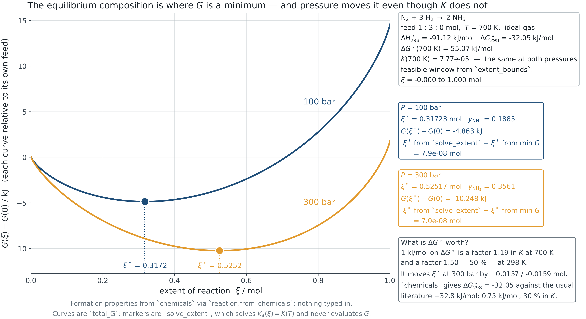
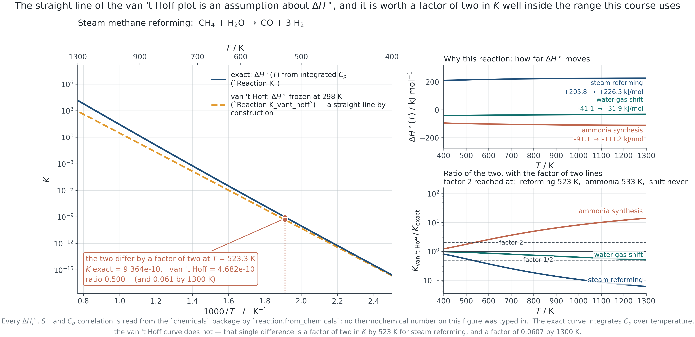
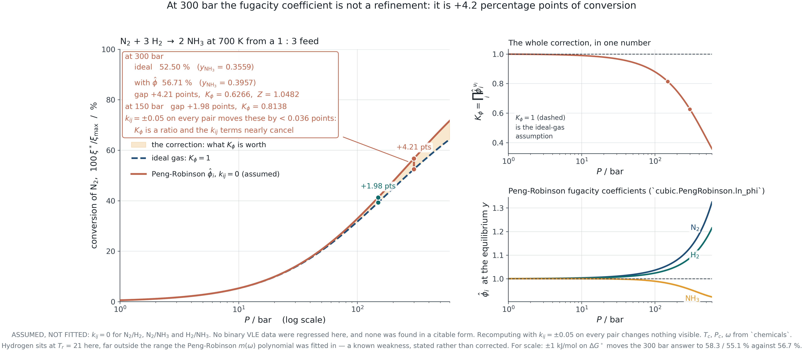
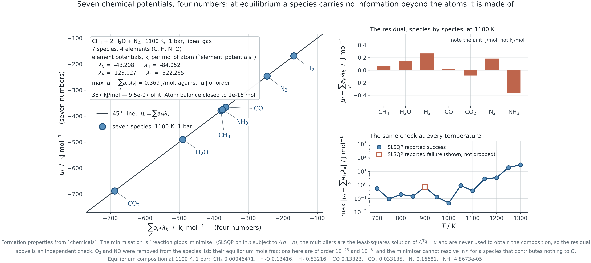
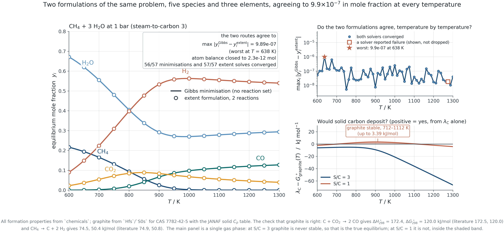
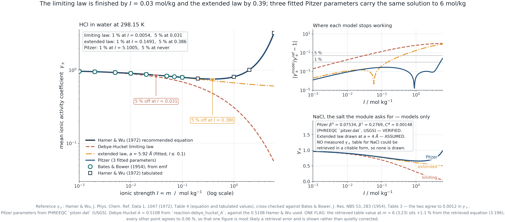
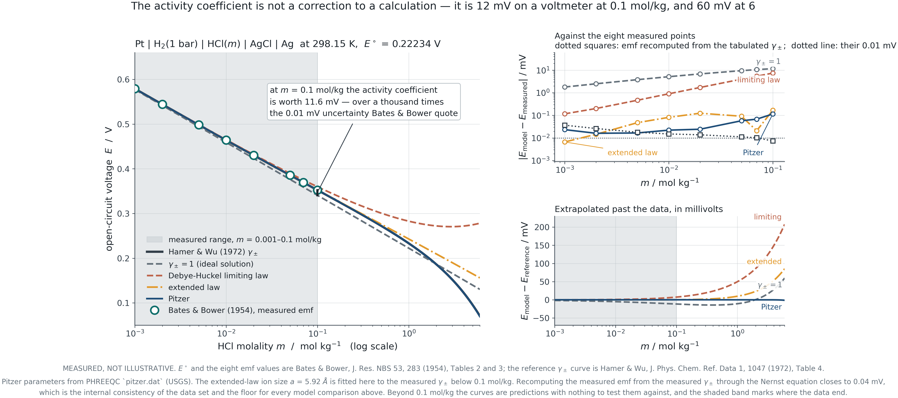

Module 6 · 2105603 Advanced Chemical Engineering Thermodynamics
9 August 2026
Nothing new is introduced in this module.
The same criterion, the same fugacity coefficient,
the same activity coefficient — under a different constraint.
Introduction
Everything from Module 1 onward feeds one constrained optimisation, and that optimisation is what an equilibrium reactor block in a process simulator solves.
The arc
Module 1 gave P-V-T. Module 2 turned it into fugacity. Module 3 gave the liquid an excess Gibbs energy. Module 4 fitted it to data. Module 5 asked whether the answer was stable.
Module 6 minimises the total Gibbs energy of everything at once.
Four questions
PART I
Section 6.1 Extent of reaction, \sum_i \nu_i\mu_i = 0, and the sharp distinction between K and composition.
6.1 · The criterion for reaction equilibrium
Stoichiometry removes almost all of the freedom. One number describes the whole composition of a single reaction.
n_i = n_{i0} + \nu_i \xi \qquad\Longrightarrow\qquad \frac{{\rm d}n_i}{\nu_i} = {\rm d}\xi \ \ \text{for every } i
Why it is one number
Atoms are conserved, so the composition cannot move in an arbitrary direction. For a single reaction it can move along exactly one line in composition space, and \xi is the distance along it.
The bounds matter
\xi is limited at one end by the limiting reactant and at the other by the products. Outside that window a mole number is negative and the objective evaluates \ln of a negative number. A solver started outside it fails in a way that looks like a physics problem and is not.
6.1 · The criterion for reaction equilibrium
At constant T and P, {\rm d}G = 0. Substituting the extent gives the whole of reaction equilibrium in one line.
{\rm d}G = \sum_i \mu_i\,{\rm d}n_i = \left(\sum_i \nu_i\mu_i\right){\rm d}\xi = 0 \qquad\Longrightarrow\qquad \boxed{\sum_i \nu_i\mu_i = 0}
The same statement
Phase equilibrium says \mu_i^{\,\alpha} = \mu_i^{\,\beta} — a transfer of species i between phases leaves G unchanged. Reaction equilibrium says a conversion along the stoichiometry leaves G unchanged. Both are {\rm d}G = 0; only the allowed variation differs.
What follows
Substituting \mu_i = G_i^\circ + RT\ln \hat a_i and rearranging gives
\prod_i \hat a_i^{\,\nu_i} = \exp\!\left(-\frac{\Delta G^\circ}{RT}\right) = K
with \Delta G^\circ = \sum_i \nu_i G_i^\circ.
6.1 · The criterion for reaction equilibrium
The single most-confused point in the subject. The composition depends on pressure and on non-ideality; K does not.
Why
K = \exp(-\Delta G^\circ/RT) and \Delta G^\circ is built from standard-state properties. The standard state fixes the pressure — 1 bar for a gas — so nothing on the right-hand side knows the system pressure.
What does move
The activity quotient. For a gas \prod \hat a_i^{\nu_i} = K_\varphi K_y (P/P^\circ)^{\Delta\nu}, so raising P with \Delta\nu < 0 forces K_y down — more product — at constant K.
Verified, not asserted
For ammonia synthesis at 700 K, raising the pressure from 1 to 300 bar changes K by exactly nothing and multiplies the ammonia mole fraction by more than a hundred.
6.1 · The criterion for reaction equilibrium

F6.1 · The minimum moves with pressure. K does not.
6.1 · The criterion for reaction equilibrium
Van ’t Hoff, and where the constant-enthalpy shortcut stops being a shortcut.
\frac{{\rm d}\ln K}{{\rm d}T} = \frac{\Delta H^\circ}{RT^2} \qquad\xrightarrow[\ \Delta H^\circ \ \text{constant}\ ]{}\qquad \ln\frac{K(T)}{K(T_0)} = -\frac{\Delta H^\circ}{R}\left(\frac1T - \frac1{T_0}\right)

F6.2 · Exact against constant-enthalpy, with the temperature at which they differ by a factor of two.
6.1 · The criterion for reaction equilibrium
| Gas | Pure ideal gas at 1 bar. \hat a_i = \hat\varphi_i y_i P / P^\circ. The trap: forgetting P^\circ, which makes K dimensional and wrong by (P/P^\circ)^{\Delta\nu} |
| Liquid | Pure liquid at T and P. \hat a_i = \gamma_i x_i. The trap: the Lewis-Randall reference is the pure liquid, which may not exist at those conditions |
| Solid | Pure solid. \hat a_i = 1, so it drops out of K entirely — but not out of the question of whether the solid is present at all |
| Solute | Hypothetical ideal 1 molal solution. \hat a_i = \gamma_i m_i / m^\circ. The trap: molarity, molality and mole fraction give three different numerical K values for the same physics |
PART II
Section 6.2 Where \hat\varphi_i from Module 2 and \gamma_i from Module 3 re-enter.
Nothing new is introduced. Existing tools meet a new constraint.
6.2 · Non-ideality in reaction equilibrium
Split the activity quotient into a composition part and a non-ideality part. Each factor is something you already know how to compute.
K = \underbrace{\prod_i \hat\varphi_i^{\,\nu_i}}_{K_\varphi} \underbrace{\prod_i y_i^{\,\nu_i}}_{K_y} \left(\frac{P}{P^\circ}\right)^{\Delta\nu} \qquad\text{(gas)} \qquad\qquad K = \underbrace{\prod_i \gamma_i^{\,\nu_i}}_{K_\gamma} \underbrace{\prod_i x_i^{\,\nu_i}}_{K_x} \qquad\text{(liquid)}
K_\varphi is a ratio
Which has a useful consequence: much of the model error cancels. Changing every binary interaction parameter by \pm 0.05 moves the ammonia conversion by less than 0.04 percentage points at any pressure marked on the next slide. The fugacity coefficients themselves are worth 4.2 points at 300 bar.
Where the effort belongs
At 300 bar the corrections rank: \hat\varphi is worth 4.2 points of conversion, an uncertainty of 1 kJ/mol in \Delta G^\circ is worth 1.6 points, and k_{ij} is worth less than 0.04 — forty times smaller than the thermochemical uncertainty. Improve the data before the mixing rule.
6.2 · Non-ideality in reaction equilibrium

F6.3 · Conversion against pressure with and without K_\varphi, from Peng-Robinson. k_{ij} = 0 assumed and labelled.
6.2 · Non-ideality in reaction equilibrium
Three concentration scales, three numerical values of K, one physical answer.
Mole fraction
Lewis-Randall reference: \gamma_i \to 1 as x_i \to 1. Natural for a solvent and for a mixture of comparable components.
Molality
Henry reference: \gamma_i \to 1 as m_i \to 0. Natural for a solute that never approaches purity, and the scale on which electrolyte data are tabulated.
Molarity
Convenient in the laboratory and awkward in thermodynamics, because it depends on the solution density and therefore on temperature and on composition.
Converting between scales changes K and \Delta G^\circ together. A reported K without its concentration scale is not a number, and neither is a \Delta G^\circ without its standard state.
PART III
Section 6.3 Multiple extents, and then the formulation that needs no reaction set at all.
6.3 · Multiple reactions and Gibbs energy minimisation
The extent formulation generalises directly — as long as the reaction set is known and independent.
n_i = n_{i0} + \sum_j \nu_{ij}\,\xi_j \qquad\qquad \sum_i \nu_{ij}\,\mu_i = 0 \quad \text{for each } j
How many are independent
R = S - \text{rank}(\mathbf{A}), with S species and \mathbf{A} the element matrix. Gas-phase steam reforming: 5 species, 3 elements, rank 3, so 2 independent reactions — and which two you write down is a choice, not a fact. Admit solid carbon and it becomes 6 species and 3 reactions.
Why the choice does not matter
Any independent set spans the same reaction space and gives the same equilibrium. If two choices give different answers, one set was not independent — which is worth checking with a rank rather than by inspection.
6.3 · Multiple reactions and Gibbs energy minimisation
It needs a reaction set. Combustion, reforming and pyrolysis do not come with one.
The problem
A hydrocarbon flame contains hundreds of species. Nobody writes down the reaction set; there is no agreed set to write. Any list you choose is a modelling assumption you cannot defend, and omitting a species that matters is invisible in the result.
The alternative
Minimise the total Gibbs energy over all species subject to conservation of atoms. No stoichiometry is required, only an element list — and an element list is not a modelling choice.
\min_{\mathbf n} \sum_i n_i\mu_i \quad\text{s.t.}\quad \mathbf{A}\mathbf{n} = \mathbf{b},\ \ n_i \ge 0
6.3 · Multiple reactions and Gibbs energy minimisation
The Lagrange multipliers of the element balances are not bookkeeping. They are the chemical potential of an atom.
\mathcal{L} = \sum_i n_i\mu_i - \sum_k \lambda_k\!\left(\sum_i a_{ki}n_i - b_k\right) \qquad\Longrightarrow\qquad \boxed{\mu_i = \sum_k a_{ki}\lambda_k}
What it says
At equilibrium a species carries no information beyond the atoms it is made of. Its chemical potential is a weighted sum of element potentials, and the weights are its formula.
Why it is useful
It is the cheapest possible check on a converged solution: the residual of that relation costs nothing to compute and does not require re-solving anything. For the reforming case it comes out at 0.37 J/mol against chemical potentials of order 400 kJ/mol.
6.3 · Multiple reactions and Gibbs energy minimisation

F6.4 · Every species on the 45° line. The residual, and the one temperature at which the optimiser failed, are both reported.
6.3 · Multiple reactions and Gibbs energy minimisation
The objective contains \sum n_i \ln(n_i/n), which is ill-conditioned as any mole number approaches zero. Student code fails here, and so does ours.
What goes wrong
A trace species contributes almost nothing to G and has a large derivative. Finite-difference gradients lose it entirely. Below about y = 10^{-10} the solution is not resolved — adding O₂ and NO to a reforming calculation drove the element-potential residual from 0.37 to 5\times10^4 J/mol.
What helps
Optimise in \ln n_i, which enforces positivity exactly rather than by a constraint the solver can step across. Restart from several compositions. Drop species that cannot matter — and say that you dropped them.
What settles it
Cross-check against the extent formulation wherever a reaction set is known. For steam reforming over 600–1300 K the two agree to 10^{-6} in mole fraction. Build that check in before you trust an answer you cannot verify.
6.3 · Multiple reactions and Gibbs energy minimisation

F6.5 · Steam reforming against temperature. Maximum disagreement with the extent formulation over the whole scan: 10^{-6} in mole fraction.
PART IV
Section 6.4 Everything at once, and then the one place where a potential difference enters the chemical potential itself.
6.4 · Simultaneous phase and reaction equilibrium
Nothing changes. The species list gains a phase label, the element balance sums over both phases, and the same minimisation runs.
\min_{\{n_i^{\,\alpha}\}} \sum_\alpha\sum_i n_i^{\,\alpha}\mu_i^{\,\alpha} \qquad\text{s.t.}\qquad \sum_\alpha \mathbf{A}\,\mathbf{n}^{\,\alpha} = \mathbf{b}
Why this is the ending
Phase equilibrium falls out as the condition \mu_i^{\,\alpha} = \mu_i^{\,\beta}; reaction equilibrium falls out as \sum\nu_i\mu_i = 0. Neither was imposed. Both are consequences of minimising one function subject to atom conservation.
And the stability question returns
The minimisation is only over the phases you listed. Whether another phase should be present is the Module 5 question, and the answer is still the tangent plane criterion. A reactive flash that was never asked about a second liquid will not find one.
6.4 · Simultaneous phase and reaction equilibrium
Why it works, not how it is designed.
The trick
Run the reaction inside the column. Removing a product by distillation as it forms pulls the reaction past its equilibrium conversion — the composition never sits at equilibrium, because the separation keeps moving it.
Equilibrium-limited esterifications are the standard case: methyl acetate production replaced a reactor and eight columns with one column.
Why it is hard
The reaction changes the phase behaviour and the phase behaviour changes the reaction. Reactive azeotropes exist that are not azeotropes of the non-reacting mixture, and the distillation boundaries of Module 5 move.
Nothing about the design is separable, which is why it is a specialist subject and why the thermodynamics has to be right first.
6.4 · Electrochemical systems
Long-range Coulomb interactions make an electrolyte non-ideal at concentrations where a molecular solution would still be ideal.
\log_{10}\gamma_\pm = -A|z_+z_-|\sqrt{I} \qquad\qquad \log_{10}\gamma_\pm = \frac{-A|z_+z_-|\sqrt{I}}{1 + Ba\sqrt{I}} \qquad\qquad I = \tfrac12\sum_i m_i z_i^2
Limiting law
Derived, with no fitted parameter, from the Poisson-Boltzmann equation and a point-charge ion. Exact as I \to 0 and 1 % wrong by I = 0.005 mol/kg.
Extended law
One fitted ion-size parameter. Buys a factor of thirty: 1 % wrong by I = 0.15 mol/kg.
Pitzer
Three fitted parameters and a virial-like expansion. 1 % to about I = 5 mol/kg — which is where industrial brines and battery electrolytes actually sit.
6.4 · Electrochemical systems

F6.6 · Three models against critically-evaluated data for HCl(aq) at 298.15 K. The electrolyte is HCl rather than NaCl because that is the data that could be retrieved and corroborated.
6.4 · Electrochemical systems
The one place in this course where a potential difference enters the chemical potential itself.
\tilde\mu_i = \mu_i + z_i F\phi \qquad\qquad \sum_i \nu_i\tilde\mu_i = 0 \qquad\Longrightarrow\qquad E = E^\circ - \frac{RT}{nF}\ln Q
Derived, not quoted
Nernst is not a new principle. It is \sum_i\nu_i\tilde\mu_i = 0 with the electrical term collected: the z_iF\phi contributions across the two electrodes sum to nF(\phi^{\rm R} - \phi^{\rm L}) = nFE, and the rest is the activity quotient.
The slope is a check
2.303\,RT/F = 59.16 mV per decade at 25 °C. If your derivation gives anything else, the electron count or a sign is wrong — and it is checkable before any data are involved.
6.4 · Electrochemical systems

The number
Against the Bates and Bower cell data, the rms error is 7.4 mV if \gamma_\pm is taken as one, 3.6 mV with the limiting law, 0.09 mV with the extended law, and 0.054 mV with Pitzer.
Why it matters
At 0.1 molal the activity coefficient is worth 11.6 mV, against a measurement uncertainty of 0.01 mV. A battery state-of-charge estimate built on ideal activities is wrong by a thousand times the resolution of its own sensor.
F6.7 · Predicted against measured cell voltage. The tabulated data were closed back through Nernst as an independent check on the transcription.
Closing
The module in six statements.